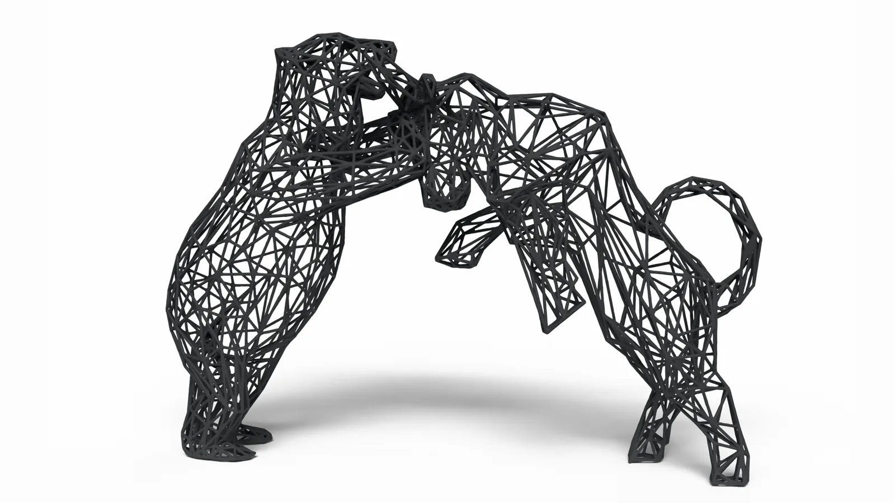
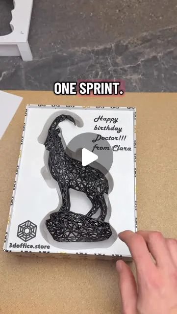
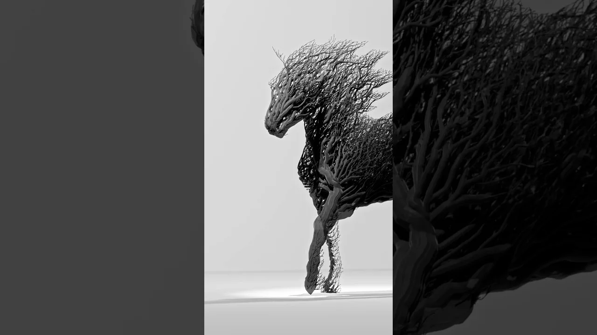
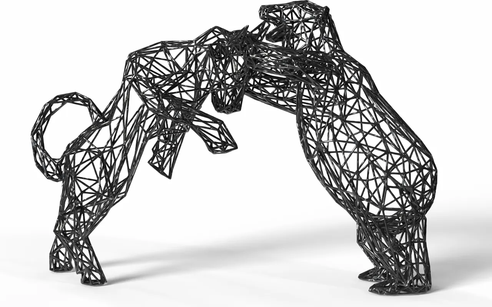
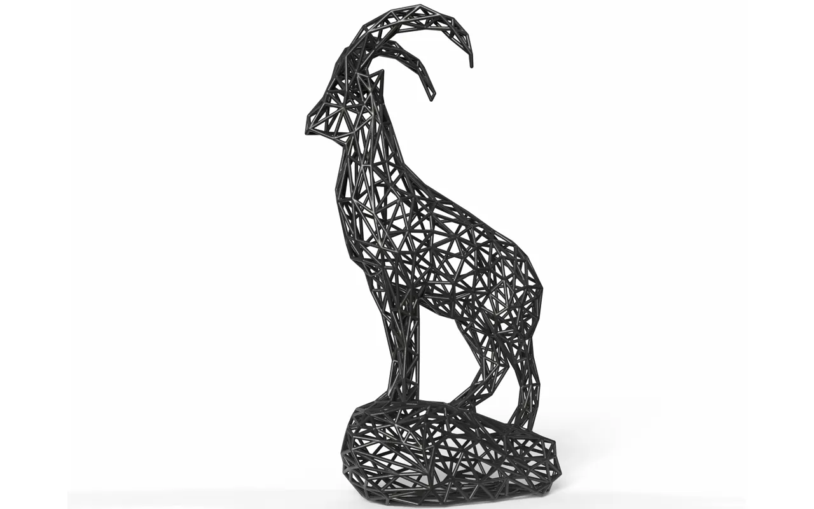

01 Brand platform
3DOfficeAT
The owned brand experience for wireframe sculptures, custom company models, and design-led objects made in Tirol, with Etsy serving as the physical product checkout.
Physical product design and digital fabrication
An independent design practice for meaningful wireframe sculptures, custom company models, and production-ready 3D-printed objects made in Tirol.

01 Direction
3DOfficeAT turns recognizable forms and personal meanings into clean wireframe silhouettes. Each object has to work as a design piece, a manufacturable model, and a product that can be explained without technical jargon.
02 System
3DOfficeAT uses a digital inventory system: production-ready models and their variants are stored as files instead of every version occupying shelf space as finished stock. This is one of 3D printing’s greatest advantages—designs remain reproducible, adaptable, and ready for on-demand production.
The work combines parametric modeling, print-aware geometry, high-precision resin production, manual finishing, and customer-facing presentation. Decisions made in the model directly affect reliability, material use, silhouette, and the final surface.
03 Selected work
The collection moves from the public 3DOfficeAT brand experience into two process-led projects and two established product designs. Together they show how digital tools, fabrication, presentation, and physical form connect.
01 Brand platform
The owned brand experience for wireframe sculptures, custom company models, and design-led objects made in Tirol, with Etsy serving as the physical product checkout.

02 Packaging workflow
A photo or slicer screenshot becomes a precisely scaled insert through Tooltrace, STL export, print-aware geometry, and a two-color result on a single-extruder printer.

03 Generative sculpture
A horse form developed through simulation into organic, root-like geometry and translated into a high-detail resin-printed sculpture.

04 Finance sculpture
The strongest verified historical product signal, developed as a symbolic finance and office design object.

05 Alpine sculpture
A founder-reported strong seller shaped around an alpine silhouette and precisely made in Tirol.
04 Role
I founded 3DOfficeAT and work across concept development, parametric modeling, print preparation, production, finishing, product photography, storefront presentation, and the custom company-model path.